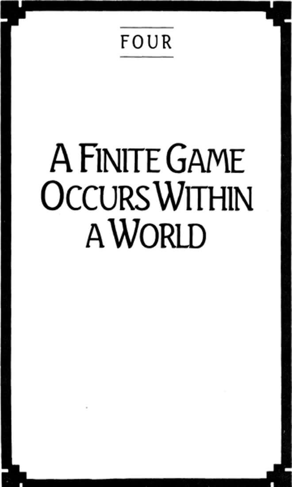

Chapter Four: A Finite Game Occurs Within a World

63
A FINITE GAME OCCURS within a world. The fact that it must be limited temporally, numerically, and spatially means that there is something against which the limits stand. There is an outside to every finite game. Its limits are meaningless unless there is something to be limited, unless there is a larger space, a longer time, a greater number of possible competitors.
There is nothing about a finite game, in itself, that determines at what time it is to be played, or by whom, or where.
The rules of a finite game will indicate the temporal, spatial, and numerical nature of the game itself; that, for example, it will last sixty minutes, will be played on a field 100 yards in length, and by two teams of eleven players each. But the rules do not, and cannot, determine the date, the location, and the specific participants. There is nothing in the rules that requires professional teams composed of certain persons, earning salaries of specified amounts, joining at the end of each season in a national championship. The rules for the practice of medicine or for the exercise of the office of the Bishop of Rome do not indicate which persons are to enter these games; which kinds of persons, yes, but never the names of anyone.
A world provides an absolute reference without which the time, place, and participants make no sense.
Whatever occurs within a game is relatively intelligible with reference to whatever else has happened inside its boundaries, but it is absolutely intelligible with reference to that world for the sake of which its boundaries exist.
It is relatively intelligible to have won an election for the presidency by a few thousand votes after a campaign of about ten months; it is absolutely intelligible to be the sixteenth President of the United States, a society unambiguously marked off from all the rest of the world by its declared boundaries, in the 1,860th year of that world’s history.
We cannot have a precise understanding of what it means to be the winner of a contest until we can place the game in the absolute dimensions of a world.
64
World exists in the form of audience. A world is not all that is the case, but that which determines all that is the case.
An audience consists of persons observing a contest without participating in it.
No one determines who an audience will be. No exercise of power can make a world. A world must be its own spontaneous source. “A world worlds” (Heidegger). Who must be a world cannot be a world.
The number of persons who join an audience is irrelevant. So is the time and space in which an audience occurs. The temporal and spatial boundaries of a finite game must be absolute—in relation to an audience or a world. But when and where a world occurs, and whom it includes, is of no importance. One does not say, “I was in the world, or audience, on November 22, 1963,” but rather, “I was just getting out of the car thinking about what to cook for dinner when I heard that the President had been shot.” An audience does not receive its identity according to the persons within it, but according to the events it observes. Those who remember that day remember precisely what they were doing in the early afternoon of that day, not because it was the 22d of November, but because it was at that moment that they became audience to the events of that day.
If the boundaries of an audience are irrelevant, what is relevant is the unity of the audience. They must be a singular entity, bound in their desire to see who will win the contest before them. Anyone for whom this desire is not primary is not in the audience for that contest, and is not a person in that world.
The fact that a finite game needs an audience before which it can be played, and the fact that an audience needs to be singularly absorbed in the events before it, show the crucial reciprocity of finite play and the world. Finite players need the world to provide an absolute reference for understanding themselves; simultaneously, the world needs the theater of finite play to remain a world. George Eliot’s villainous character, Grandcourt, “did not care a languid curse for anyone’s admiration; but this state of non-caring, just as much as desire, required its related object—namely, a world of admiring and envying spectators: for if you are fond of looking stonily at smiling persons, the persons must be there and they must smile.”
We are players in search of a world as often as we are world in search of players, and sometimes we are both at once. Some worlds pass quickly into existence, and quickly out of it. Some sustain themselves for longer periods, but no world lasts forever.
65
There is an indefinite number of worlds.
66
The reciprocity of game and world has another, deeper effect on the persons involved. Because the seriousness of finite play derives from the players’ need to correct another’s putative assessment of themselves, there is no requirement that the audience be physically present, since players are already their own audience. Just as in finite sexuality where the absence or death of parents has no effect on the child’s determination to prove them wrong, finite players become their own hostile observers in the very act of competing.
I cannot be a finite player without being divided against myself.
A similar dynamic is found in the audience. When sufficiently oblivious to their status as audience, the observers of a finite game become so absorbed in its conduct that they lose the sense of distance between themselves and the players. It is they, quite as much as the players, who win or lose. For this reason the audience absorbs in itself the same politics of resentment that moves players to show they are not what they think others think they are. The audience is under the same constraint to disprove this judgment.
When we ask where an audience will find its own audience, we discover the division inherent in all audiences. Each side of a conflict comes with its own partisan observers. Inasmuch as the conflict is expressed within the bounded playing of a game, the audience is unified—but its unity consists in its opposition to itself.
We cannot become a world without being divided against ourselves.
67
Occurring before a world, theatrically, a finite game occurs within time. Because it has its boundaries, its beginning and end, within the absolute temporal limits established by a world, time for a finite player runs out; it is used up. It is a diminishing quantity.
A finite game does not have its own time. It exists in a world’s time. An audience allows players only so much time to win their titles.
Early in a game time seems abundant, and there appears a greater freedom to develop future strategies. Late in a game, time is rapidly being consumed. As choices become more limited they become more important. Errors are more disastrous.
We look on childhood and youth as those “times of life” rich with possibility only because there still seem to remain so many paths open to a successful outcome. Each year that passes, however, increases the competitive value of making strategically correct decisions. The errors of childhood can be more easily amended than those of adulthood.
For the finite player in us freedom is a function of time. We must have time to be free.
The passage of time is always relative to that which does not pass, to the timeless. Victories occur in time, but the titles won in them are timeless. Titles neither age nor die. The points of reference for all finite history are signal triumphs meant never to be forgotten: establishment of the throne of David, the birth of the Savior, the journey to Medina, the battle of Hastings, the American, French, Russian, Chinese, and Cuban revolutions.
Time divided into periods is theatrical time. The lapse of time between the opening and closing of an era is a scene between curtains. It is not a time lived, but a time viewed—by both players and audience. The periodization of time presupposes a viewer existing outside the boundaries of play, able to see the beginning and the end simultaneously.
The outcome of a finite game is the past waiting to happen. Whoever plays toward a certain outcome desires a particular past. By competing for a future prize, finite players compete for a prized past.
68
The infinite player in us does not consume time but generates it. Because infinite play is dramatic and has no scripted conclusion, its time is time lived and not time viewed.
As an infinite player one is neither young nor old, for one does not live in the time of another. There is therefore no external measure of an infinite player’s temporality. Time does not pass for an infinite player. Each moment of time is a beginning.
Each moment is not the beginning of a period of time. It is the beginning of an event that gives the time within it its specific quality. For an infinite player there is no such thing as an hour of time. There can be an hour of love, or a day of grieving, or a season of learning, or a period of labor.
An infinite player does not begin working for the purpose of filling up a period of time with work, but for the purpose of filling work with time. Work is not an infinite player’s way of passing time, but of engendering possibility. Work is not a way of arriving at a desired present and securing it against an unpredictable future, but of moving toward a future which itself has a future.
Infinite players cannot say how much they have completed in their work or love or quarreling, but only that much remains incomplete in it. They are not concerned to determine when it is over, but only what comes of it.
For the finite player in us freedom is a function of time. We must have the time to be free. For the infinite player in us time is a function of freedom. We are free to have time. A finite player puts play into time. An infinite player puts time into play.
69
Just as infinite players can play any number of finite games, so too can they join the audience of any game. They do so, however, for the play that is in observing, quite aware that they are audience. They look, but they see that they are looking.
Infinite play remains invisible to the finite observer. Such viewers are looking for closure, for the ways in which players can bring matters to a conclusion and finish whatever remains unfinished. They are looking for the way time has exhausted itself, or will soon do so. Finite players stand before infinite play as they stand before art, looking at it, making a poiema of it.
If, however, the observers see the poiesis in the work they cease at once being observers. They find themselves in its time, aware that it remains unfinished, aware that their reading of the poetry is itself poetry. Infected then by the genius of the artist they recover their own genius, becoming beginners with nothing but possibility ahead of them.
If the goal of finite play is to win titles for their timelessness, and thus eternal life for oneself, the essence of infinite play is the paradoxical engagement with temporality that Meister Eckhart called “eternal birth.”